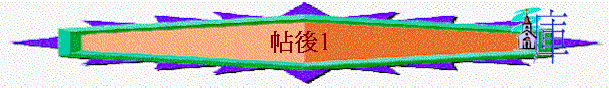

|
在兇惡的世代中要堅守信仰 |
|||
|
面對逼迫的人 |
面對迷惑的人 |
面對兇惡的人 |
面對悖逆的人 |
|
1:1-12 |
2:1-17 |
3:1-5 |
3:6-18 |
引言1:1-2
「保羅、西拉、提摩太寫信給帖撒羅尼迦、在 神─我們的父與主耶穌基督��的教會。願恩惠、平安從父 神和主耶穌基督歸與你們！」帖後1:1-2
1.作者
∼是保羅、西拉，提摩太聯名寫的，但卻是保羅親筆內容
2.對象
∼帖撒羅尼迦教會，但不是屬於帖撒羅尼迦信徒，而是父神與主的教會
3.祝願
∼同帖前一樣，信徒在患難裡，最需要的是從神和主而有的恩惠(有善意、好處、恩典的意思)與平安
一.面對逼迫的人----要常存忍耐(1:3-12)
∼此段講述信徒在生活中遇到逼迫他們的人，保羅藉讚賞教會及預告逼迫他們的人會受報應，來鼓勵他們繼續在難處中，常存忍耐，持守信仰
1.屬靈成長的讚賞(1:3-4)
「弟兄們，我們該為你們常常感謝 神，這本是合宜的；因你們的信心格外增長，並且你們眾人彼此相愛的心也都充足。」1:3
∼「該」----有欠了某些東西及必須的意思
∼保羅寫完帖前時，勉勵他們繼續在信仰路上進深，而後來他們真是有繼續成長，所以神僕必須要為他們經常感謝神
A.信心格外增長
「在 神─我們的父面前，不住地記念你們因信心所做的工夫，因愛心所受的勞苦，因盼望我們主耶穌基督所存的忍耐。」帖前1:3
「我們晝夜切切地祈求，要見你們的面，補滿你們信心的不足。」帖前3:10
∼「信心」----對真理與神的堅信與相信，「格外增長」----有大增成長及成長驚人意思
∼帖前1:3已提到他們是有信心的，而至帖後1:3更形容他們的信心是繼續增添，甚至是大量成長的。保羅之前也望能補滿他們信心的不足
B.愛心也都充足
「又願主叫你們彼此相愛的心，並愛眾人的心都能增長，充足，如同我們愛你們一樣，」帖前3:12
「論到弟兄們相愛，不用人寫信給你們；因為你們自己蒙了 神的教訓，叫你們彼此相愛。你們向馬其頓全地的眾弟兄固然是這樣行，但我勸弟兄們要更加勉勵。」帖前4:9-10
∼「充足」----有增多及充足有餘的意思
∼在帖前3:12，保羅希望他們能有彼此相愛及愛眾人的心，在帖後1:3則看到他們在愛上成長，他們眾人彼此相愛的心真是增多及充足的
C.忍耐仍舊常存
「在 神─我們的父面前，不住地記念你們因信心所做的工夫，因愛心所受的勞苦，因盼望我們主耶穌基督所存的忍耐。」帖前1:3
「打發我們的兄弟在基督福音上作 神執事的（作 神執事的：有古卷是與 神同工的）提摩太前去，堅固你們，並在你們所信的道上勸慰你們，免得有人被諸般患難搖動。因為你們自己知道，我們受患難原是命定的。」帖前3:2-3
「甚至我們在 神的各教會��為你們誇口，都因你們在所受的一切逼迫患難中，仍舊存忍耐和信心。」帖後1:4
∼帖前1:3提及保羅讚賞教會有因盼望而存的忍耐，另外帖前3:2-3，保羅也擔心他們在患難中會動揺，所以盼望在他們所信的道上堅固他們
∼在帖後1:4，保羅卻要在各教會中誇耀他們，引他們為傲，因為他們在一切患難中，仍舊不失去，仍常存忍耐和愛心
∼「忍耐」有堅定、持久、耐心、毅力的意思，而信心可以強化信徒的忍耐
2.配得神國的明證(1:5)
「這正是 神公義判斷的明證，叫你們可算配得 神的國；你們就是為這國受苦。」1:5
「凡事不怕敵人的驚嚇，這是證明他們沉淪，你們得救都是出於 神。因為你們蒙恩，不但得以信服基督，並要為他受苦。」腓1:28-29
∼「明證」----有證據及明顯的跡象意思
∼神揀選帖撒羅尼迦教會能得神的國，如何証明神的揀選及神的判斷是公正(公義的意思)？看看信徒為神的國承受患難，他們存忍耐的心，就証明他們是配得神的國的，神的判斷也是公正的
3.審判惡人的預告(1:6-10)
A.公義的原則
a.加患難給信徒的人→遭患難報應
「神既是公義的，就必將患難報應那加患難給你們的人，」1:6
∼回應前文，神既是公義的，所以加患難給信徒的人，神必用患難報應他們
b.忍受苦難的信徒→必同得平安
「也必使你們這受患難的人與我們同得平安。那時，主耶穌同他有能力的天使從天上在火焰中顯現，」1:7
∼神對信徒也是公義的，信徒為神的國受苦，他們有一天(下文的那時)，會與神僕們一同得平安，保羅深信自已終得平安，跟隨主的信徒也可經歷
B.審判的情景
a.主的顯現
「也必使你們這受患難的人與我們同得平安。那時，主耶穌同他有能力的天使從天上在火焰中顯現，」1:7
「看哪，耶和華必在火中降臨；他的車輦像旋風，以烈怒施行報應，以火焰施行責罰；」賽66:15
「但主的日子要像賊來到一樣。那日，天必大有響聲廢去，有形質的都要被烈火銷化，地和其上的物都要燒盡了。」彼後3:10
∼主會與有能力的天使們(不只一個)從天上在火焰中顯現
強調「火焰」，可能因神是烈火，主在烈火的神中顯現，也可能主回來時，用火審判世界
b.報應惡人
「要報應那不認識 神和那不聽從我主耶穌福音的人。他們要受刑罰，就是永遠沉淪，離開主的面和他權能的榮光。」1:8-9
(1)報應的對像
(A)不認識神的人
(B)不聽從主福音的人
(2)報應的內容
(A)永遠沉淪
「倘若你一隻眼叫你跌倒，就去掉它；你只有一隻眼進入 神的國，強如有兩隻眼被丟在地獄��。在那��，蟲是不死的，火是不滅的。」可9:47-48
∼「沉淪」----有毁壞及死亡的意思
∼不聽福音及不認識神的人，他們會永遠在地獄受毁壞，那�娷峎O不死，火是不滅，有無止息的痛苦及毁壞臨到他們
(B)離開主面
∼「榮光」----有光芒、榮耀的意思
∼惡人會受審，離開主的面與光輝或榮耀
C.基督得榮耀
「這正是主降臨、要在他聖徒的身上得榮耀、又在一切信的人身上顯為希奇的那日子。我們對你們作的見證，你們也信了。」1:10
「叫他的榮耀從我們這首先在基督��有盼望的人可以得著稱讚。」弗1:12
「這聖靈是我們得基業的憑據，直等到 神之民被贖，使他的榮耀得著稱讚。」弗1:14
∼當那日子(主回來的時候)，信徒真正得贖，萬物從信徒的生命、得贖、改變，在苦難中忍耐等事情，看到主的榮耀，也感受到主在信徒身上的拯救與改變的奇妙
∼神僕也曾見證關乎主再回來的奇妙與改變，信徒也信了
4.神僕的祈求(1:11-12)
A.相配人生
「因此，我們常為你們禱告，願我們的 神看你們配得過所蒙的召，又用大能成就你們一切所羨慕的良善和一切因信心所做的工夫，」1:11
∼「配得」----認為合適及值得
∼既然主會有一天降臨，我們要迎見主及得著神的國，所以神僕盼望神見到我們時，我們是值得神所揀選，值得神將祂的國賜給我們
B.成就美善
∼「成就」----有充滿及成全的意思
∼「工夫」----有行為、人的作為意思
∼既然信徒生命也有成長，他們也有信心及羡慕美好的事之表現，保羅願神的大能繼續充滿他們，成全他們的一切良善與信心所作的工(包括因信而有的行為、勞苦、忍耐等表現)
C.至終目的
「叫我們主耶穌的名在你們身上得榮耀，你們也在他身上得榮耀，都照著我們的 神並主耶穌基督的恩。」1:12
a.主得榮耀
「榮耀」----有讚美、尊崇的意思，因著神的成全，主在信徒的生命與行為b.上得榮耀
∼信徒也因主的拯救、主的改變、主的降臨得榮耀，這都是照神及基督的恩典